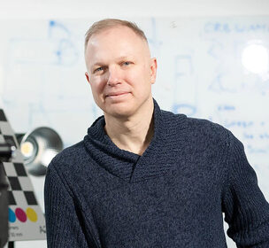
CAU Kiel · Marie Skłodowska-Curie (MSCA) Fellow
James Pritts is a Marie Skłodowska-Curie Actions Fellow in the Marine Data Science group at Kiel University’s Institute of Computer Science. His research focuses on robust geometric estimation for computer vision, including RANSAC-based model fitting, camera calibration, and multi-view geometry, with applications ranging from conventional imagery to challenging underwater environments.
Before joining Kiel University, he was an Assistant Professor at Ukrainian Catholic University, where he conducted research in 3D computer vision and helped establish the Ph.D. program in Applied Sciences. He previously worked at the Czech Institute of Informatics, Robotics and Cybernetics and at Facebook Reality Labs, where he developed geometric calibration methods for head-mounted capture systems.
His work has received the ACCV 2018 Saburo Tsuji Best Paper Award and the IVCNZ 2013 Best Paper Award. He is also a member of the European Laboratory for Learning and Intelligent Systems. Earlier in his career, he served as Lead Engineer at BAE Systems on DARPA-funded computer-vision projects and as a research fellow at NASA, where he developed prototype gesture-recognition software for the International Space Station.
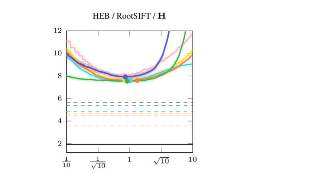
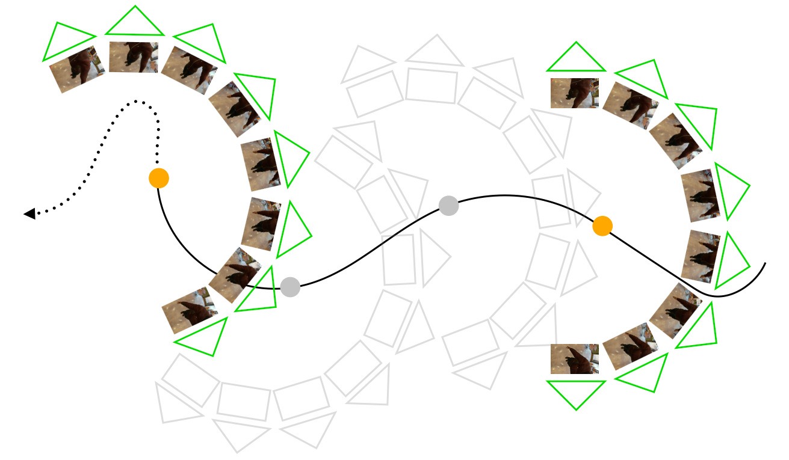
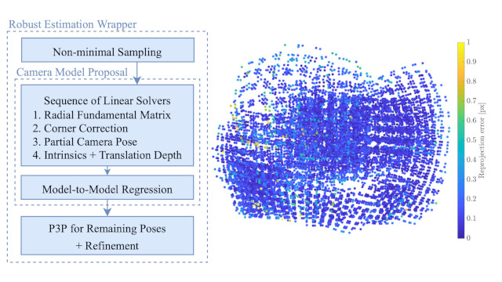
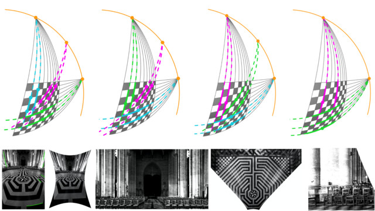
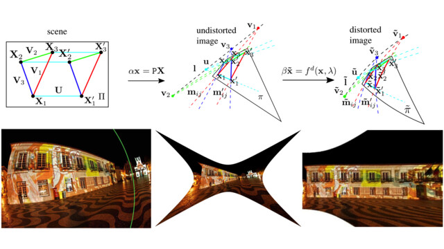
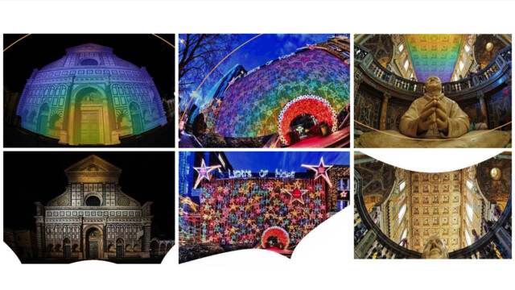
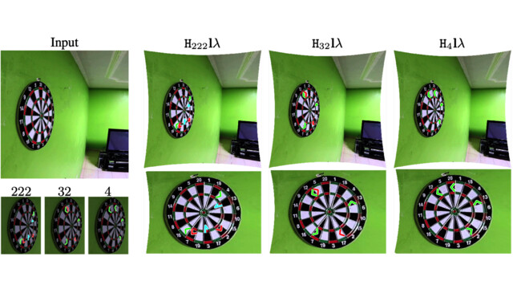
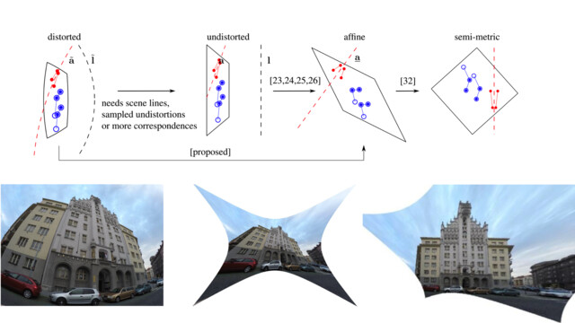
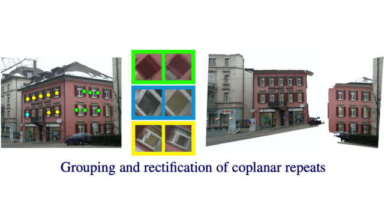
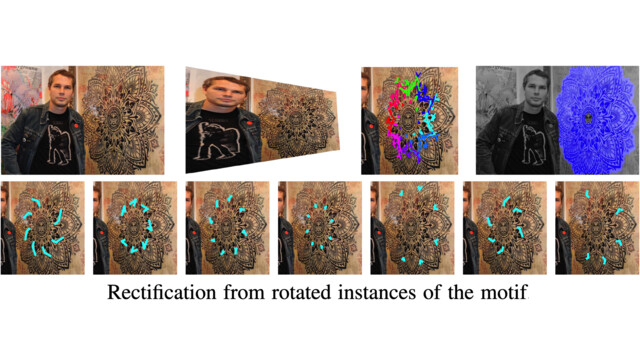
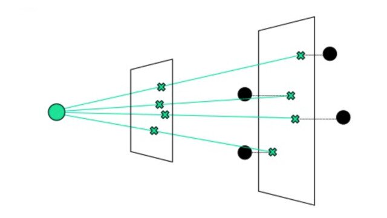
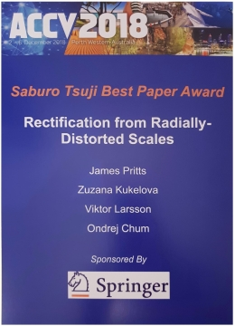
ACCV 2018 Saburo Tsuji Best Paper
Rectification from Radially-Distorted Scales
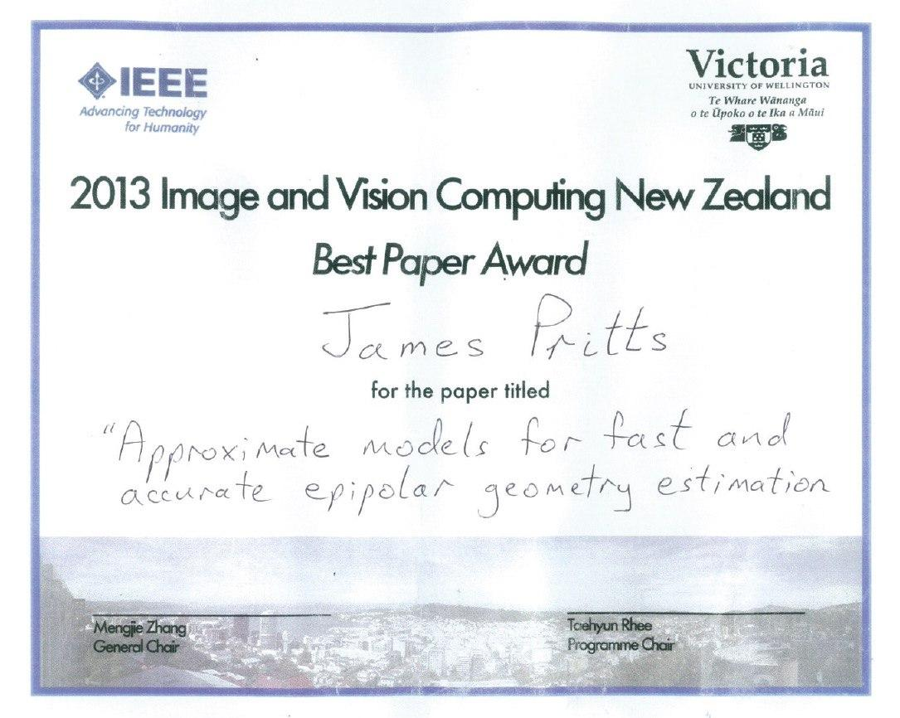
IVCNZ 2013 Best Paper
Approximate Models for Fast and Accurate Epipolar Geometry Estimation
Till Sittart Kiel University, 2026
Thesis: Affine-Equivariant Blob Targets for Robust Absolute Pose in Robotics
Liam Boddin Kiel University, 2025
Thesis: Underwater Calibration of Near-point Anisotropic Lights
Igor Babin Ukrainian Catholic University, 2024
Thesis: Image Inpainting in Latent Space
Dmytro Nadobko Ukrainian Catholic University, 2023
Thesis: Supervised Learning of Correspondence Volumes for Coplanar Repetitive Patterns
Andrii Stadnik Ukrainian Catholic University, 2023
Thesis: Corner Localization and Camera Calibration from Imaged Lattices
Yaroslava Lochman Ukrainian Catholic University, 2020
Thesis: Minimal Solvers for Single-View Auto-Calibration
moved on as Ph.D. student at Chalmers University of Technology
Yaroslav Romanus Ukrainian Catholic University, 2024
Thesis: Applying Motion in Latent Space
Ostap Viniavskyi Ukrainian Catholic University, 2021
Thesis: Learning Discriminative Context-Aware Keypoints Representations for Resolving Ambiguous Matches
moved on as Researcher at The ML Lab at Ukrainian Catholic University
Kostiantyn Liepieshov Ukrainian Catholic University, 2021
Thesis: Manhattan-Frame Detection in Lens-Distorted Images
moved on as M.Sc. student at Ukrainian Catholic University